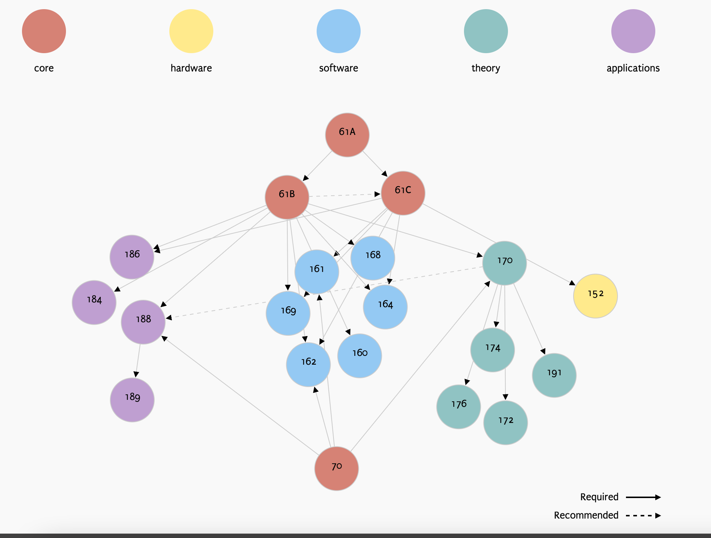

Berkeley 电子工程与计算机科学
作为四大CS名校之一，伯克利在计算机领域的研究对计算机科学的实际应用产生过重大影响，比如和乔布斯创建苹果的天才程序员Steve Wozniak，伯克利UNIX、INGRES数据库系统、精简指令集RISC、计算复杂度理论等等。而且伯克利CS课程的资料非常新而且全，非常推荐大家来学习。
课程说明
计算机科学知识并不仅限于计算机专业的学生来学习，如果你是非工程领域（比如数学、统计、物理、英语、经济学、商业、音乐等）专业的学生想双修计算机，或者你只想专注于CS但是对EE课程不感兴趣，或者你是其他专业想学习计算机科学知识，伯克利有专门的计算机Arts学位，不过本学习路线以工程学院EECS内容为主，所以难度深度会偏大一些。
伯克利计算机属于EECS学院，以下为EECS学院整个的学习路线，可以看到课程被分为电路、硬件、信号/控制、人工智能/机器学习、计算机理论、图形学、设计、计算机架构、计算机系统等多个部分：

而对于计算机专业的学生来说，并不需要学习多少EE类的相关课程，计算机专业的课程可以分为核心课程、硬件、软件、理论以及应用五大类，学习的顺序如下所示：

在伯克利的教学中，编程语言通常都不会纳入到核心课程里面，但是却也是非常重要的课，需要Self-paced也就是自己安排时间和进度去学习，学分是主课的一半。这些编程语言相关的课程，是一些主课的先修课，你可以在学完CS10计算机科学导论之后再去学习。
- CS9A：Matlab，教材为《Mastering Matlab》，自己学
- CS9C：C语言，教材为《实用C语言编程》
- CS9D：Scheme和函数式编程，自己学
- CS9E：Unix环境，教材为《Your UNIX/LINUX: The Ultimate Guide》
- CS9F：C++，教材为《A Computer Science Tapestry》
- CS9G：Java，教材为《Head First Java》
- CS9H：Python，教材为《像计算机科学家一样思考Python》
必修实践课指的是这些课不是主课（Lecture），而是需要你在大三、大四时完成的必修课。伯克利是非常重视实验课，在大一时，你需要先修这些基础的编程语言和linux相关知识，在大三、大四还会必修四种方式的课，
- 一是校外实习CS197，
- 二是根据学生的意愿选择一门编程主题去深入学习CS198；这些编程的主题包括：iOS应用开发、3D建模与动画、Linux嵌入式、React全栈开发、云计算和SaaS、机器人、数据挖掘等诸多当前流行的应用方向；
- 三是自主选择方向学习CS199；
- 四是讨论交流技术对社会的影响CS195
伯克利官方给出了一个选课建议，就是以下课程负担太重，最好不要同时选：
- EECS151 (Digital Systems) 数字系统
- CS 152(Computer Architecture) 计算机体系结构
- CS 162(Operating Systems) 操作系统
- CS 164(Programming Languages and Compilers)程序语言和编译器
- CS 169(Software Engineering) 软件工程
- CS 170(CS Theory) 计算机科学理论
- CS 184(Computer Graphics) 计算机图形学
- CS 189(Machine Learning) 机器学习
推荐学习课程
① CS61A 计算机程序的结构和解释
对编程和计算机科学的介绍，侧重于抽象技术作为管理程序复杂性的手段。技术包括程序抽象；使用递归、高阶函数、生成器和流控制抽象；使用接口、对象、类和通用运算符进行数据抽象；和使用解释器和宏的语言抽象。本课程向学生展示编程范式，包括函数式、面向对象和声明式方法。它包括对算法渐近分析的介绍。有几个重要的编程项目。
先修课程： 零基础可学，无先修课程
学习地址： CS61A 计算机程序的结构和解释
② CS61B 数据结构
基本的动态数据结构，包括线性列表、队列、树和其他链接结构；数组字符串和哈希表。存储管理。软件工程的基本原理。抽象数据类型。排序和搜索的算法。Java 编程语言简介。
先修课程： CS61A 计算机程序的结构和解释、微积分
学习地址： CS61B 数据结构
③ CS61C 计算机组成原理
数字计算机的内部组织和操作。机器架构，支持高级语言（逻辑、算术、指令排序）和操作系统（I/O、中断、内存管理、进程切换）。计算机逻辑设计的要素。基本架构设计决策中涉及的权衡。
先修课程： CS61A 计算机程序的结构和解释、CS61B 数据结构
学习地址： CS61C 计算机组成原理
④ CS152/252 计算机体系结构与工程
目录说明：指令集体系结构、微编码、流水线（简单和复杂）。内存层次结构和虚拟内存。处理器并行性：VLIW、向量、多线程。多处理器。
先修课程：CS61C 计算机组成原理
学习地址：CS61C 计算机组成原理
⑤ CS160 用户界面设计和开发
用户界面的设计、实现和评估。以用户为中心的设计和任务分析。概念模型和界面隐喻。可用性检查和评估方法。分析用户研究数据。输入法（键盘、指向、触摸、有形）和输入模型。视觉设计原则。接口原型设计和实现方法和工具。学生将为团队中的特定任务和目标用户组开发用户界面。
先修课程： CS61B 数据结构
学习地址： CS160 用户界面设计和开发
⑥ CS161 计算机安全
计算机安全简介。密码学，包括加密、身份验证、散列函数、密码协议和应用程序。操作系统安全，访问控制。网络安全、防火墙、病毒和蠕虫。软件安全、防御性编程和基于语言的安全。来自真实世界系统的案例研究。
先修课程： CS61C 计算机组成原理、CS70 离散数学和概率论
学习地址： CS161 计算机安全
⑦ CS162 操作系统和系统编程
操作系统和系统编程的基本概念。实用程序、子系统、多程序系统。进程、进程间通信和同步。内存分配、分段、分页。加载和链接，库。资源分配、调度、绩效评估。文件系统、存储设备、I/O 系统。保护、安全和隐私。
先修课程： CS61B 数据结构、CS61C 计算机组成原理、CS70 离散数学和概率论
学习地址： CS162 操作系统和系统编程
⑧ CS164 编程语言和编译器
编程语言调查。现代编程语言的设计。扫描、解析、语义分析和代码生成的原理和技术。编译器、解释器和汇编器的实现。运行时组织和错误处理概述。
先修课程： CS61B 数据结构、CS61C 计算机组成原理
学习地址： CS164 编程语言和编译器
⑨ CS168 互联网简介：架构和协议
本课程是对 Internet 架构的介绍。我们将专注于有助于 Internet 的可扩展性和稳健性的概念和基本设计原则，并调查该架构中使用的各种协议和算法。主题包括分层、寻址、域内路由、域间路由、可靠传递、拥塞控制和核心协议（例如，TCP、UDP、IP、DNS 和 HTTP）和网络技术（例如，以太网、无线）。
先修课程： CS61B 数据结构、CS162 操作系统和系统编程
学习地址： CS168 互联网简介：架构和协议
⑩ CS169A/L 软件工程
设计、开发和修改大型软件系统的想法和技术。面向功能和面向对象的模块化设计技术，旨在实现可重用性和可维护性。规范和文档。验证和确认。成本和质量指标和估计。项目团队的组织和管理。学生将在一个重要的编程项目中团队合作。
先修课程： CS61B 数据结构、CS61C 计算机组成原理、 CS70 离散数学和概率论
学习地址： CS169A/L 软件工程
⑪ CS170 高效算法和棘手问题
算法设计和分析中的概念和基本技术；计算模型；下限；优化搜索树、平衡树和 UNION-FIND 算法的算法；数值和代数算法；组合算法。图灵机，如何计算步数，确定性和非确定性图灵机，NP 完备性。无法解决和难以解决的问题。
先修课程： CS61B 数据结构、CS70 离散数学和概率论
学习地址： CS170 高效算法和棘手问题
⑫ CS172 可计算性和复杂性
有限自动机、图灵机和 RAM。不可判定、指数和多项式时间问题。所有合理计算模型的多项式时间等价。非确定性图灵机。NP-完全性理论：库克定理，基本问题的NP-完全性。语言理论、复杂性和随机性方面的选定主题。
先修课程： CS170 高效算法和棘手问题
学习地址： CS172 可计算性和复杂性
⑬ CS186 数据库系统简介
方便数据访问的访问方法和文件系统。分层、网络、关系和面向对象的数据模型。模型的查询语言。在编程语言中嵌入查询语言。数据库服务，包括保护、完整性控制和数据的替代视图。高级接口，包括应用程序生成器、浏览器和报告编写器。事务处理简介。数据库系统实施将作为学期项目完成。
先修课程： CS61B 数据结构、CS61C 计算机组成原理
学习地址： CS186 数据库系统简介
推荐选修课
① CS184. 计算机图形学基础
用于计算机渲染的对象建模技术：边界表示、构造实体几何、分层场景描述。曲线和曲面表示的数学技术。计算机图形渲染管道的基本要素；现代图形显示设备的体系结构。几何变换，例如旋转、缩放、平移及其矩阵表示。齐次坐标、投影和透视变换。裁剪、隐藏表面去除、光栅化和抗锯齿的算法。基于扫描线和基于射线的渲染算法。反射、折射、透明度的照明模型。
先修课程： CS61B 数据结构以及C、C++、Java等编程语言
学习地址： CS184. 计算机图形学基础